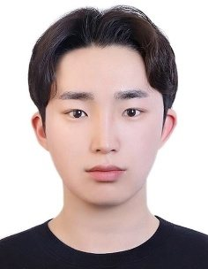
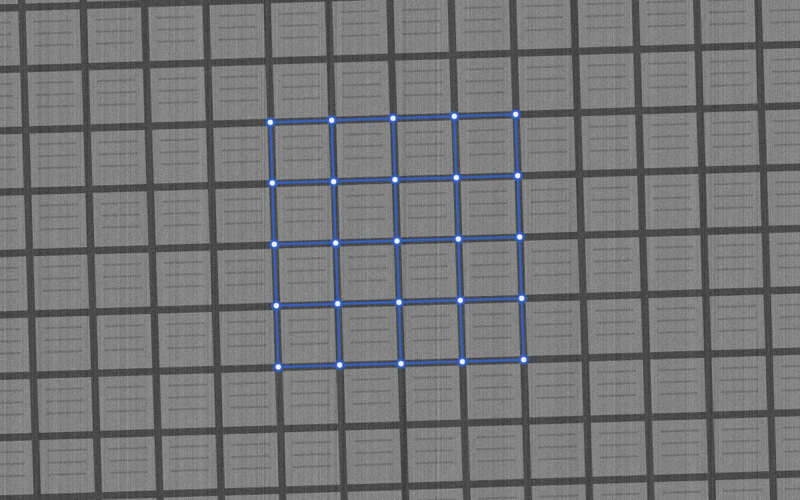
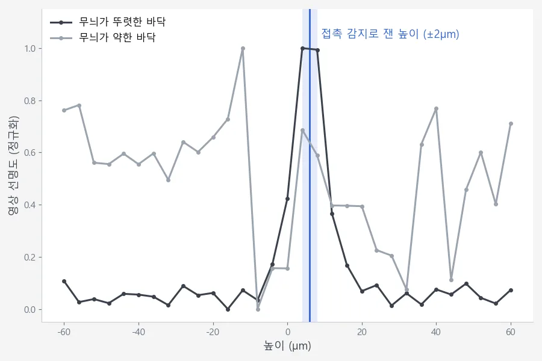
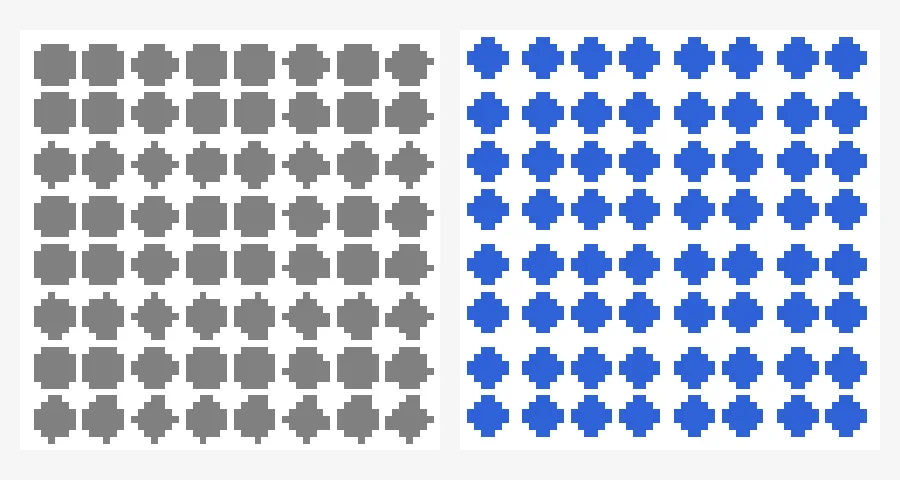

정렬 마크 Align 시간
템플릿 방식 대비, 현장 12/12 Slot 검출
Bump Recipe 작성 시간
도면 기반 자동 배치
Auto Focus 시간
영상 AF 동시 검증, 이후 접촉 감지로 ±2µm
연속 운전 장애 0건
신규 설비 양산 투입 후
대표 프로젝트
카드를 누르면 문제, 접근, 결과를 볼 수 있습니다.

Feature 등록 없는 Wafer Align
Die 배열의 주기에 격자를 맞춰 회전각을 구하고, 틀린 결과는 스스로 거릅니다.
- 오판정 합격
- 0건
- 최대 각도 오차
- −98%
신규 Particle 제거 설비 SW
참고 코드 없는 신규 설비를 양산에서 멈추지 않을 때까지 안정화했습니다.

입자 높이 Auto Focus
영상 AF 를 72% 빠르게 만든 뒤, 무늬 없는 바닥에서 막히자 접촉 감지 방식으로 다시 설계했습니다.
- 영상 AF 시간
- −72%
- 높이 반복성
- ±2µm

정렬 마크 검출, 규칙 + CNN
템플릿 없이 Die 마크를 찾고, 규칙이 놓친 흐린 마크는 CNN 이 보완합니다.
- Align 시간
- −79%
- 오검출 (CNN 보완)
- −59%

검사 Recipe 자동 생성
설계 도면과 맵에서 검사 Recipe 를 만들어 수작업 Teaching 을 줄였습니다.
- Recipe 작성 시간
- −92%
- 대면적 변환 시간
- −87%

Die 가장자리 Crack 검출
기존 검사가 놓치거나 과검하던 가장자리 Crack 을 다단계 알고리즘으로 잡습니다.
- 전체 결함 중 새로 검출
- 28%
그 외 프로젝트
영상 알고리즘
 패턴 매칭 점수 오판정 개선
패턴 매칭 점수 오판정 개선안정화와 Interlock
설비 Setup 과 평가
일하는 방식
개선된 것과 아닌 것을 나눠 보고합니다. 현장 데이터로 확인된 것만 기본값으로 바꿉니다.
- 재현실패를 합성 영상으로 먼저 재현
- 설계Python 으로 설계하고 같은 세트로 전후 비교
- 이식C++ 로 옮긴 뒤 결과를 값 단위로 대조
- 전환Shadow 병행으로 현장 데이터를 쌓은 뒤 전환
직접 써 보는 데모
팀의 반복 업무를 줄이려고 만든 도구를, 합성 데이터로 다시 만들었습니다.
 설비 로그 분석기
설비 로그 분석기
 주간 보고 생성기
주간 보고 생성기
만드는 중: Klarf 웨이퍼 맵 뷰어, 레시피 기준 관리, 정렬 마크 검출 비교, 메일 분류기
경력
Feature 없는 Align, 정렬 마크 검출, 도면 기반 Recipe 자동 생성, Crack 검출, Tip 파손 재발 방지
신규 Particle 제거 설비 SW 셋업과 현장 상주 안정화, 입자 높이 Auto Focus, 적외선 광학계 평가
2D, 3D 검사 설비 Tact 단축과 Tilt 보정, 데이터 백업 도구, 결과 편집 기능
반도체 검사장비 기업 SW팀 입사 (일학습병행), 설비 유지보수, Interlock 과 데이터 관리 기능
학력
- 인하대학교 제조혁신전문대학원반도체공정지능화융합 석사, 재직자 과정 (2028.02 졸업 예정)
- 한국공학대학교 컴퓨터전자공학과일학습병행 (2026.02 졸업)
기술
- 영상처리OpenCV, IPP, NCC 매칭, 서브픽셀 피팅, 원근 변환
- 장비 SWC++ (MFC), C# (WPF, WinForms), C++/CLI
- 카메라와 센서Line Scan (TDI), Area, 3D 공초점 센서, DAQ
- 데이터Python, NumPy, CNN 학습, 로컬 LLM
함께 일할 팀을 찾고 있습니다
2028년 3월 입사 가능, 석사 졸업 후 전문연구요원 편입을 희망합니다.